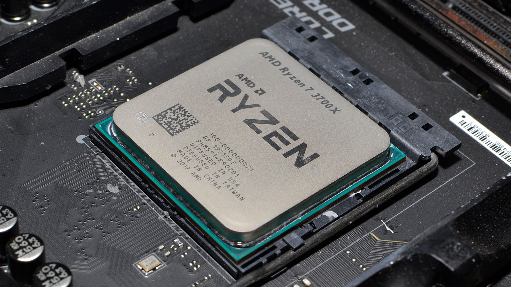

CPU
Centralna Procesna Enota ali CPE (Angleško CPU) je osrednji del računalnika, ki obdeluje podatke ter upravlja ostale enote.
Sestavljajo ga aritmetično logična enota, ki izvršuje operacije z podatki, ki jih zahtevajo ukazi;
Krmilna enota, ki skrbi za pretok podatkov in ukazov po vodilih iz pomnilnika v procesor in obratno. Krmilna enota bere ukaz za ukazom iz programa, jih dekodira in preko množice krmilnih signalov krmili njihovo izvajanje.
Večina procesorjev danes je večjedernih, to pomeni, da je možno opravljati več opravil (niti) naenkrat brez težav (zmrzovanja...), kar omogoča paralelno procesiranje.
